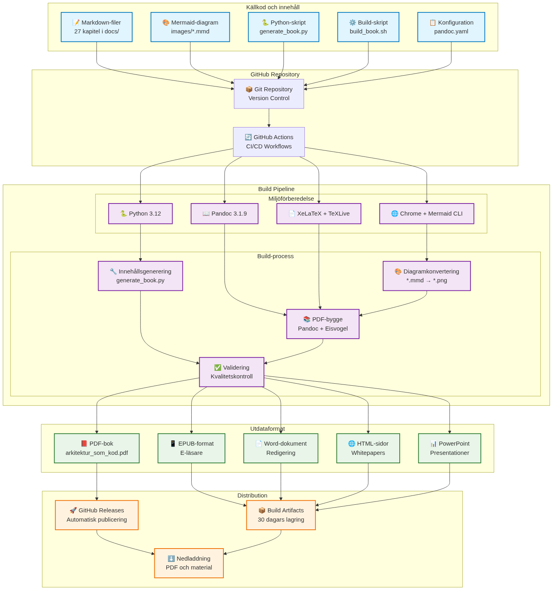
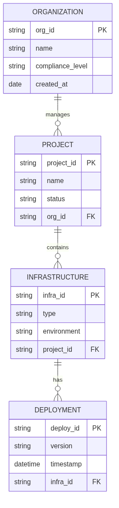

technical uppbyggnad for bokproduktion
This chapter describes The technical infrastructureen and arbetsflödet as is used to create, bygga and publicera "Architecture as Code". Systemet exemplifierar praktisk application of Architecture as Code-principerna by use code to definiera and automatisera entire bokproduktionsprocessen.

The diagram illustrates the comprehensive technical systemet as driver bokproduktionen, from markdown-Sources via automated pipelines to slutliga publikationer.

Ovanstående entitetsrelationsdiagram shows The logiska dataStructureen for how organisationer, projekt, infrastructure and deployments relaterar to varandra in a Architecture as Code-Architecture as Code-implementation.
Markdown-filer: structure and syfte
Filorganisation and namnkonvention
Book content is organiserat in 31 markdown-filer within docs/-katalogen, where each File represents A chapter:
docs/
├── 01_introduction.md # Introduktion and vision
├── 02_fundamental_principles.md # Fundamental Concepts
├── 03_version_control.md # Git and version control
├── ... # Tekniska chapter (04-22)
├── 21_digitalization.md # Digitaliseringsstrategi
├── 22_lovable_mockups.md # Produktupptäckt med Lovable
├── 23_soft_as_code_interplay.md # Samspel mellan mjuka discipliner
├── 24_best_practices.md # Metodval och erfarenheter
├── 25_future_trends.md # Framtida trender
├── 26_future_development.md # Långsiktig utveckling
├── 27_conclusion.md # Avslutning
├── 28_glossary.md # Terminologi
├── 29_about_the_authors.md # Författarinformation
├── 30_appendix_code_examples.md # Tekniska exempel
└── 31_technical_architecture.md # Detta kapitel
Markdown-struktur and semantik
each chapter follows a konsistent structure as optimerar both läsbarhet and maskinell bearbetning:
# Kapiteltitel (H1 - creates new sida in PDF)
Introduktionstext with kort Description of kapitlets content.

*Bildtext as förklarar diagrammets content.*
## Huvudsektion (H2)
### Undersektion (H3)
#### Detaljsektion (H4)
- Listpunkter for strukturerat content
- Kodexempel in fenced code blocks
- Referenser and källor
Automatisk innehållsgenerering
Systemet uses generate_book.py to automatically generera and uppdatera kapitelContents:
- Iterativ generering: creates Contents in kontrollerade batch-processes
- Mermaid-integration: Automatisk generering of diagram-placeholders
- Konsistenshållning: ensures enhetlig structure over all chapter
- version control: all changes is tracked through Git
Pandoc: Konvertering and formatering
Konfigurationssystem
Pandoc-konverteringen styrs of pandoc.yaml which definierar all format-specific inställningar:
# Fundamental inställningar
standalone: true
toc: true
toc-depth: 3
number-sections: true
top-level-division: chapter
# Eisvogel-template for professionell PDF-layout
template: eisvogel.latex
pdf-engine: xelatex
# Metadata and variabler
metadata:
title: "architecture as code"
subtitle: "Infrastructure as Code (architecture as code) in praktiken"
author: "Kodarkitektur Bokverkstad"
Build-process and architecture as code-automation
build_book.sh orchestrerar entire build-processen:
- Miljövalidering: Kontrollerar Pandoc, XeLaTeX and Mermaid CLI
- Diagram-konvertering: Konverterar
.mmd-filer to PNG-format - PDF-generering: Sammanställer all chapter to a sammanhållen bok
- Format-variationer: Stöd for PDF, EPUB and DOCX-export
# Konvertera Mermaid-diagram
for mmd_file in images/*.mmd; do
png_file="${mmd_file%.mmd}.png"
mmdc -in "$mmd_file" -o "$png_file" \
-t default -b transparent \
--width 1400 --height 900
done
# Generera PDF with all chapter
pandoc --defaults=pandoc.yaml "${CHAPTER_FILES[@]}" -o arkitektur_som_kod.pdf
Kvalitetssäkring and validation
- Template-validation: Automatisk kontroll of Eisvogel-template
- Konfigurationskontroll: Verifierar pandoc.yaml-inställningar
- Bildhantering: ensures all diagram-References is giltiga
- Utdata-verification: Kontrollerar genererade filer
GitHub Actions: CI/CD-pipeline
Huvudworkflow for bokproduktion
build-book.yml automates entire publikationsprocessen:
name: Build Book
on:
push:
branches: [main]
paths:
- 'docs/**/*.md'
- 'docs/images/**/*.mmd'
pull_request:
branches: [main]
workflow_dispatch: {}
jobs:
build-book:
runs-on: ubuntu-latest
timeout-minutes: 90
Workflow-step and optimeringar
- Miljöuppställning (15 minuter):
- Python 3.12 installation
- TeXLive and XeLaTeX (8+ minuter)
- Pandoc 3.1.9 installation
-
Mermaid CLI with Chrome-dependencies
-
Cachning and performance:
- APT-paket caching for snabbare builds
- Pip-dependencies caching
-
Node.js modules caching
-
Build-process (30 sekunder):
- Diagram-generering from Mermaid-Sources
- PDF-kompilering with Pandoc
-
quality controls and validation
-
Publicering and distribution:
- Automatisk release-creatende at main-branch pushes
- Artifact-lagring (30 dagar)
- PDF-distribution via GitHub Releases
Kompletterande workflows
Content Validation (content-validation.yml):
- Markdown-syntaxvalidering
- Länk-kontroll and bildvalidering
- Språklig quality control
Presentation Generation (generate-presentations.yml):
- PowerPoint-material from bokkapitel
- Structureerade presentationsoutlines
- Kvadrat-branding and professionell styling
Whitepaper Generation (generate-whitepapers.yml):
- Individuella HTML-documents per chapter
- Standalone-format for distribution
- SEO-optimerat and print-vänligt
Presentation-material: Förberedelse and generering
Automatisk outline-generering
generate_presentation.py creates Presentation materials from bokContents:
def generate_presentation_outline():
"""Genererar presentationsoutline from all bokkapitel."""
docs_dir = Path("docs")
chapter_files = sorted(glob.glob(str(docs_dir / "*.md")))
presentation_data = []
for chapter_file in chapter_files:
chapter_data = read_chapter_content(chapter_file)
if chapter_data:
presentation_data.append({
'file': Path(chapter_file).name,
'chapter': chapter_data
})
return presentation_data
PowerPoint-integration
Systemet genererar: - Presentation outline: Structured markdown with nyckelbudskap - Python PowerPoint-script: Automatisk slide-generering - Kvadrat-branding: Konsistent visuell identitet - Contentssoptimering: Anpassat for muntlig presentation
Distribution and use
# Ladda ner artifacts from GitHub Actions
cd presentations
pip install -r requirements.txt
python generate_pptx.py
Resultatet is professionella PowerPoint-presentationer optimerade for: - Konferenser and workshops - UtbildningsPurpose - Marknadsforingsaktiviteter - Tekniska seminarier
Omslag and whitepapers: design and integration
Omslag-designsystem
Bokens omslag are created through A HTML/CSS-baserat designsystem:
exports/book-cover/
├── source/
│ ├── book-cover.html # Huvuddesign
│ ├── book-cover-light.html # Ljus variant
│ └── book-cover-minimal.html # Minimal design
├── pdf/ # Print-färdiga PDF-filer
├── png/ # Högupplösta PNG-exportar
└── scripts/
└── generate_book_cover_exports.py
Kvadrat-varumärkesintegrering
Designsystemet implement Kvadrat-identiteten:
:root {
--kvadrat-blue: hsl(221, 67%, 32%);
--kvadrat-blue-light: hsl(217, 91%, 60%);
--kvadrat-blue-dark: hsl(214, 32%, 18%);
--success: hsl(160, 84%, 30%);
}
.title {
font-size: 72px;
font-weight: 800;
line-height: 0.9;
letter-spacing: -2px;
}
Whitepaper-generering
generate_whitepapers.py creates standalone HTML-documents:
- 26 individuella whitepapers: A per chapter
- Professionell HTML-design: Responsiv and print-vänlig
- Svenska anpassningar: Optimerat for Swedish organizations
- SEO-optimering: Korrekt meta-data and structure
- Distribution-vänligt: can shared via e-post, webb or print
technical architecture and systemintegration
holistic view at architecture
Entire systemet exemplifierar Architecture as Code through:
- codified Contentsshantering: Markdown as källa for sanning
- Automatiserad pipeline: Ingen manuell intervention krävs
- version control: Fullständig history of all changes
- reproducibility: Identiska builds from same source code
- scalability: Enkelt to lägga to new chapter and format
Kvalitetssäkring and testing
- Automatiserad validation: Continuous kontroll of Contents and format
- Build-verification: ensures all format is generated korrekt
- Performance-monitoring: Spårning of build-tider and resursanvändning
- Error-handling: Robusta felwithdelanden and återställningsmekanismer
Framtida development
Systemet is designat for continuous improvement: - Modulär architecture: Enkelt to uppdatera individual components - API-possibilities: Potential for integration with externa systems - Skalning: Stöd for fler format and distributionskanaler - Internationalisering: Forberedelse for flerspråkig publicering
Summary
The modern Architecture as Code methodology represents framtiden for infrastructure management in Swedish organizations. The technical uppbyggnaden for "Architecture as Code" demonstrerar praktisk application of bokens own principles. by kodifiera entire publikationsprocessen is achieved:
- Architecture as Code-automation: Komplett CI/CD for bokproduktion
- Kvalitet: Konsistent format and professionell presentation
- Effektivitet: Snabb iteration and feedback-loopar
- scalability: Enkelt to utöka with nytt Contents and format
- Transparens: Open source code and documentserad process
This technical systems functions as a konkret illustration of how Architecture as Code-principerna can be applied also utanfor traditional IT-systems, which creates value through automation, reproducibility and continuous improvement.
Sources: - GitHub Actions Documentation. "Workflow syntax for GitHub Actions." GitHub, 2024. - Pandoc User's Guide. "Creating documents with Pandoc." John MacFarlane, 2024. - Mermaid Documentation. "Diagram syntax and examples." Mermaid Community, 2024. - LaTeX Project. "The Eisvogel template documentation." LaTeX Community, 2024.